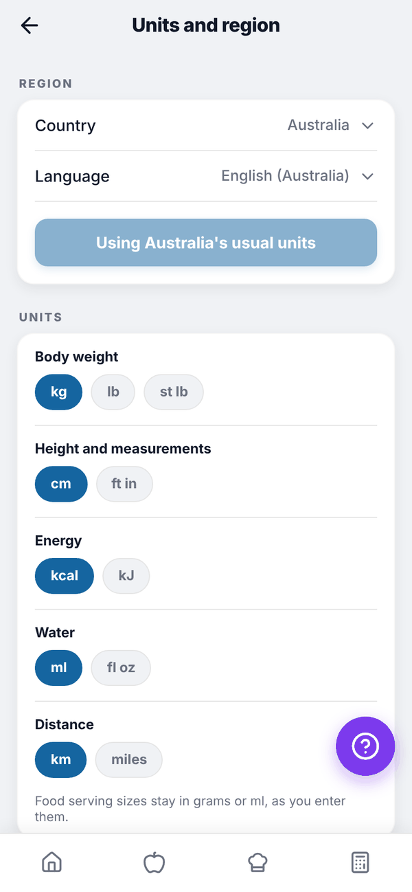

Totality Nutrition guide
Units and region
Show weight, height, energy, water and distance in the units you use, and set your country, language, week start and clock.
Units change how numbers are shown and how the numbers you type are read. They're the same on Free, Trial and Paid. You first choose them in onboarding; change them any time in Settings, Units and region.

Change your units#
- On Home, tap the gear icon to open Settings.
- Under UNITS AND REGION, tap Units and region.
- Tap the option you want. Each change saves straight away and a short message confirms it.
| Setting | Options |
|---|---|
| Body weight | kg, lb, st lb |
| Height and measurements | cm, ft in (tape measurements show in inches) |
| Energy | kcal, kJ |
| Water | ml, fl oz |
| Distance | km, miles |
| Week starts on | Monday, Sunday, Saturday |
| Time | 12 hour, 24 hour |
Under REGION, pick your Country and Language (the English you prefer). The button below them reads Use Australia's usual units (or your country's), and changes to Using Australia's usual units once they match. Looks like shows today's date and time in your chosen style.
What changes where#
- kJ shows energy in kJ on Home, the food log, Add food, Breakdown, Insights and the Calculator, and you type kJ in edit boxes.
- lb or st lb changes weight entry in Progress, Measures and the Calculator. Stone users log a weight change in pounds, and the weight chart is in lb.
- fl oz changes water amounts and your water target.
- Tali writes her sentences in your units and your English.
Questions#
If I switch from kg to lb, will my weight history change?
No. It's stored in kg and simply shown in lb.
Do these settings carry over to Totality?
Units are saved on your account, so the Nutrition onboarding starts from the units you already confirmed in Totality.
Why does the meal plan week still start on Monday?
The meal plan and grocery weeks always run Monday to Sunday. Your week start setting changes calendars and date displays.